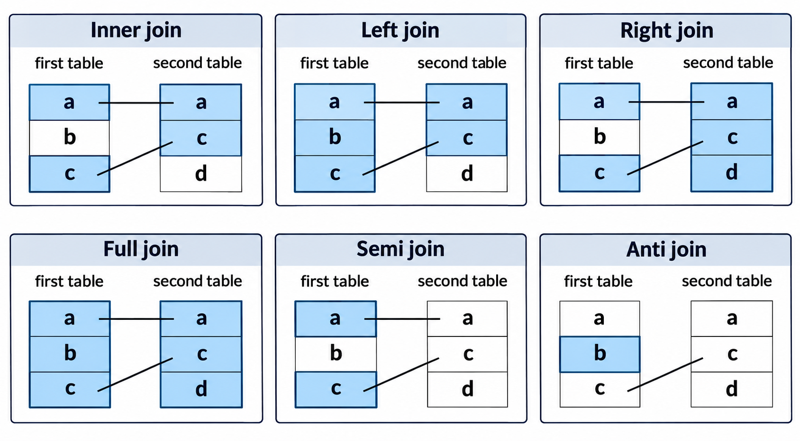

Código
install.packages(c("dplyr", "readr", "purrr"))Ya vimos como importar y explorar archivos, y como transformar una tabla con dplyr y tidyr. Ahora resolveremos dos situaciones habituales al trabajar con datos:
Seguiremos utilizando resultados sintéticos con estructura de salida tabular de BLAST. No ejecutaremos BLAST ni interpretaremos estos datos como resultados biológicos reales. Los umbrales utilizados serán ejemplos para practicar programación.
Descarga y descomprime datos_sesion_04_integracion.zip dentro de la carpeta data_raw/ de tu proyecto de RStudio. La estructura esperada es:
mi_proyecto/
├── mi_proyecto.Rproj
├── data_raw/
│ └── datos_sesion_04_integracion/
│ ├── metadata_secuencias.csv
│ ├── metadata_duplicada.csv
│ ├── blast_muestras/
│ │ ├── muestra_A.tsv
│ │ ├── muestra_B.tsv
│ │ └── muestra_C.tsv
│ └── README.md
└── results/La carpeta results/ se utilizará para guardar los archivos que produzca nuestro código. No sobrescribiremos los datos originales.
Usaremos los paquetes dplyr, readr y, brevemente, purrr. Si no están instalados, se instalan una sola vez:
install.packages(c("dplyr", "readr", "purrr"))Cargamos los paquetes que utilizaremos y definimos las rutas:
library(dplyr)
Adjuntando el paquete: 'dplyr'The following objects are masked from 'package:stats':
filter, lagThe following objects are masked from 'package:base':
intersect, setdiff, setequal, unionlibrary(readr)
getwd()[1] "C:/Users/hayde/Documents/RSites/Intro_to_R_Bioinfo_2027-1"carpeta_datos <- "data_raw/datos_sesion_04_integracion"
carpeta_blast <- file.path(carpeta_datos, "blast_muestras")
if (!dir.exists("results")) {
dir.create("results")
}%>% y las rutas
En esta sesión utilizaremos %>% para encadenar transformaciones. La función file.path() construye rutas sin que tengamos que escribir manualmente el separador de carpetas. Recuerda ejecutar los ejemplos desde el proyecto de RStudio para que las rutas relativas funcionen.
Imaginemos que tenemos dos tablas. La primera contiene alineamientos; la segunda describe las secuencias de consulta.
blast_A <- read_tsv(
file.path(carpeta_blast, "muestra_A.tsv"),
show_col_types = FALSE
)
metadata <- read_csv(
file.path(carpeta_datos, "metadata_secuencias.csv"),
col_types = cols(codigo_muestra = col_character(), .default = col_guess())
)
head(blast_A)# A tibble: 6 × 6
query_id subject_id pident length evalue bitscore
<chr> <chr> <dbl> <dbl> <dbl> <dbl>
1 seq01 ref_001 87.9 216 1e-40 119.
2 seq01 ref_002 68.2 245 1e-36 185.
3 seq01 ref_003 93.5 168 1e-35 386.
4 seq02 ref_004 82.6 111 1e-85 260.
5 seq02 ref_005 68.7 292 1e-57 323.
6 seq03 ref_007 88.2 254 1e- 5 362.head(metadata)# A tibble: 6 × 4
query_id organismo origen codigo_muestra
<chr> <chr> <chr> <chr>
1 seq01 Bacteria_A suelo 001
2 seq02 Bacteria_B agua 002
3 seq03 Bacteria_C suelo 003
4 seq04 Bacteria_A agua 004
5 seq05 Bacteria_B suelo 005
6 seq06 Bacteria_C agua 006 cols(): define los tipos de datos de las columnas.
codigo_muestra = col_character(): obliga a que la columna codigo_muestra se importe como texto, incluso si contiene únicamente números. Esto permite conservar identificadores como “001” o “002” sin perder los ceros iniciales.
.default = col_guess(): indica que, para todas las demás columnas, readr debe detectar automáticamente el tipo de dato.
La columna query_id aparece en ambas tablas. Por eso podemos utilizarla como clave de unión.
Una clave no necesariamente tiene que llamarse igual en las dos tablas, pero debe representar el mismo tipo de identificador. Por ejemplo, no sería correcto unir query_id con subject_id solamente porque ambos contienen texto.
En metadata, cada query_id identifica una sola fila. En los resultados de BLAST, una misma consulta puede aparecer varias veces porque tiene varios alineamientos.
Por tanto, al relacionar resultados de BLAST con metadatos tenemos, en principio, una relación de muchos a uno: varios alineamientos pueden corresponder a una sola secuencia de consulta.
metadata %>%
count(query_id) %>%
arrange(desc(n))# A tibble: 9 × 2
query_id n
<chr> <int>
1 seq01 1
2 seq02 1
3 seq03 1
4 seq04 1
5 seq05 1
6 seq06 1
7 seq07 1
8 seq08 1
9 seq10 1blast_A %>%
count(query_id) %>%
arrange(desc(n))# A tibble: 3 × 2
query_id n
<chr> <int>
1 seq01 3
2 seq02 2
3 seq03 2La función count() cuenta filas para cada valor de la columna indicada. En la sesión 3 vimos que es equivalente a una combinación de group_by() y summarise(n = n()).
En los datos de práctica:
seq09 aparece en los resultados de la muestra C, pero no en los metadatos.seq10 aparece en los metadatos, pero no tiene resultados de BLAST en las muestras.Esto nos permitirá observar cómo se comportan las distintas uniones.
dplyrUna unión (join) combina columnas de dos tablas a partir de los valores de una o varias claves. En la Figura 9.1 se muestran los principales tipos de uniones disponibles en dplyr, así como las diferencias entre las observaciones que conserva cada operación.

left_join(): conservar la tabla de la izquierdaleft_join(x, y, by = "query_id") conserva todas las filas de x y añade la información coincidente de y.
blast_A_con_metadata <- blast_A %>%
left_join(metadata, by = "query_id")
blast_A_con_metadata %>%
select(query_id, subject_id, pident, organismo, origen) %>%
head()# A tibble: 6 × 5
query_id subject_id pident organismo origen
<chr> <chr> <dbl> <chr> <chr>
1 seq01 ref_001 87.9 Bacteria_A suelo
2 seq01 ref_002 68.2 Bacteria_A suelo
3 seq01 ref_003 93.5 Bacteria_A suelo
4 seq02 ref_004 82.6 Bacteria_B agua
5 seq02 ref_005 68.7 Bacteria_B agua
6 seq03 ref_007 88.2 Bacteria_C suelo Observa que una secuencia con varios alineamientos recibe la misma información de metadatos en cada fila correspondiente. Esto es esperado: no significa que se hayan duplicado accidentalmente los alineamientos.
inner_join(): conservar solo las correspondenciasinner_join() conserva únicamente las filas que tienen una clave coincidente en ambas tablas.
Para comparar mejor las funciones, leeremos también la muestra C, que contiene seq09:
blast_C <- read_tsv(
file.path(carpeta_blast, "muestra_C.tsv"),
show_col_types = FALSE
)
nrow(blast_C)[1] 7blast_C %>%
inner_join(metadata, by = "query_id") %>%
nrow()[1] 6El resultado puede tener menos filas que la tabla original: las filas sin correspondencia quedan fuera.
anti_join(): encontrar identificadores sin correspondenciaanti_join(x, y, by = "query_id") devuelve las filas de x que no encuentran una coincidencia en y.
blast_C %>%
anti_join(metadata, by = "query_id")# A tibble: 1 × 6
query_id subject_id pident length evalue bitscore
<chr> <chr> <dbl> <dbl> <dbl> <dbl>
1 seq09 ref_099 91.4 178 2e-35 192.También podemos invertir el orden para identificar metadatos sin resultados en esta muestra:
metadata %>%
anti_join(blast_C, by = "query_id")# A tibble: 6 × 4
query_id organismo origen codigo_muestra
<chr> <chr> <chr> <chr>
1 seq01 Bacteria_A suelo 001
2 seq02 Bacteria_B agua 002
3 seq03 Bacteria_C suelo 003
4 seq04 Bacteria_A agua 004
5 seq05 Bacteria_B suelo 005
6 seq10 Bacteria_D sedimento 010 En left_join() y anti_join(), intercambiar x e y cambia la pregunta. No es lo mismo preguntar «¿qué resultados carecen de metadatos?» que «¿qué secuencias de los metadatos no tienen resultados?».
full_join(): conservar las filas de ambas tablasfull_join() incluye tanto las coincidencias como las filas sin correspondencia de cualquiera de las tablas.
blast_C %>%
full_join(metadata, by = "query_id") %>%
select(query_id, subject_id, organismo) %>%
arrange(query_id)# A tibble: 13 × 3
query_id subject_id organismo
<chr> <chr> <chr>
1 seq01 <NA> Bacteria_A
2 seq02 <NA> Bacteria_B
3 seq03 <NA> Bacteria_C
4 seq04 <NA> Bacteria_A
5 seq05 <NA> Bacteria_B
6 seq06 ref_017 Bacteria_C
7 seq07 ref_019 Bacteria_A
8 seq07 ref_020 Bacteria_A
9 seq07 ref_021 Bacteria_A
10 seq08 ref_022 Bacteria_B
11 seq08 ref_023 Bacteria_B
12 seq09 ref_099 <NA>
13 seq10 <NA> Bacteria_DCuando una fila no tiene información de la otra tabla, las columnas correspondientes contienen NA.
| Función | ¿Qué filas conserva? | Uso típico |
|---|---|---|
left_join(x, y) |
Todas las de x y sus coincidencias en y |
Agregar metadatos a resultados |
inner_join(x, y) |
Solo las que coinciden en ambas | Trabajar con registros compartidos |
anti_join(x, y) |
Las de x sin coincidencia en y |
Encontrar identificadores sin información asociada |
full_join(x, y) |
Todas las de x y de y |
Explorar el conjunto completo de identificadores |
¿Qué sucede si la tabla de metadatos contiene más de una fila para un mismo query_id?
metadata_duplicada <- read_csv(
file.path(carpeta_datos, "metadata_duplicada.csv"),
col_types = cols(codigo_muestra = col_character(), .default = col_guess())
)
metadata_duplicada %>%
count(query_id)# A tibble: 2 × 2
query_id n
<chr> <int>
1 seq01 2
2 seq02 1En esta tabla, seq01 aparece dos veces. Al unirla con blast_A, cada alineamiento de seq01 encontrará dos coincidencias, y por ello producirá dos filas en el resultado:
nrow(blast_A)[1] 7blast_A %>%
left_join(metadata_duplicada, by = "query_id") %>%
nrow()Warning in left_join(., metadata_duplicada, by = "query_id"): Detected an unexpected many-to-many relationship between `x` and `y`.
ℹ Row 1 of `x` matches multiple rows in `y`.
ℹ Row 1 of `y` matches multiple rows in `x`.
ℹ If a many-to-many relationship is expected, set `relationship =
"many-to-many"` to silence this warning.[1] 10No debemos resolver esto eliminando duplicados automáticamente: primero necesitamos comprender por qué existen. Quizá la clave elegida no identifica de forma única los registros, o quizá se requiere una clave compuesta.
Antes de una unión en la que esperamos una fila por identificador en los metadatos, podemos comprobarlo:
metadata %>%
count(query_id) %>%
filter(n > 1)# A tibble: 0 × 2
# ℹ 2 variables: query_id <chr>, n <int>Una tabla vacía indica que no se encontraron identificadores repetidos.
Hasta ahora hemos relacionado tablas que contienen información diferente sobre los mismos identificadores. Ahora tenemos otro problema: varios archivos con las mismas columnas, pero con registros diferentes.
En este caso no queremos añadir columnas mediante una clave; queremos apilar filas.
bind_rows()blast_B <- read_tsv(
file.path(carpeta_blast, "muestra_B.tsv"),
show_col_types = FALSE
)
blast_total <- bind_rows(
muestra_A = blast_A,
muestra_B = blast_B,
muestra_C = blast_C,
.id = "muestra"
)
blast_total %>%
count(muestra)# A tibble: 3 × 2
muestra n
<chr> <int>
1 muestra_A 7
2 muestra_B 7
3 muestra_C 7El argumento .id = "muestra" crea una columna que indica de qué archivo proviene cada registro. Esto es importante: si perdemos la procedencia de los registros, después podría resultar difícil interpretar los resultados.
blast_total %>%
select(muestra, query_id, subject_id, pident) %>%
head()# A tibble: 6 × 4
muestra query_id subject_id pident
<chr> <chr> <chr> <dbl>
1 muestra_A seq01 ref_001 87.9
2 muestra_A seq01 ref_002 68.2
3 muestra_A seq01 ref_003 93.5
4 muestra_A seq02 ref_004 82.6
5 muestra_A seq02 ref_005 68.7
6 muestra_A seq03 ref_007 88.2bind_rows() y un joinbind_rows() coloca una tabla debajo de otra. Se usa cuando las columnas representan la misma información.left_join() y otras uniones relacionan tablas mediante claves y agregan columnas.En esta sesión no necesitaremos bind_cols(): unir columnas por posición puede producir correspondencias equivocadas si las filas no están perfectamente alineadas.
En la sesión 1 aprendimos a escribir funciones. Aquí las recuperamos para que una transformación pueda repetirse con distintos argumentos. Por ejemplo, al trabajar con resultados de BLAST podemos cambiar el umbral sin reescribir el procedimiento:
filtrar_alineamientos <- function(tabla, identidad_minima = 90) {
tabla %>%
filter(pident >= identidad_minima) %>%
arrange(desc(bitscore))
}
filtrar_alineamientos(blast_A)# A tibble: 2 × 6
query_id subject_id pident length evalue bitscore
<chr> <chr> <dbl> <dbl> <dbl> <dbl>
1 seq01 ref_003 93.5 168 1e-35 386.
2 seq03 ref_008 93.6 319 1e-36 96.6filtrar_alineamientos(blast_B, identidad_minima = 95)# A tibble: 2 × 6
query_id subject_id pident length evalue bitscore
<chr> <chr> <dbl> <dbl> <dbl> <dbl>
1 seq03 ref_010 99 229 1e- 8 336.
2 seq03 ref_009 97.8 191 1e-71 97.9tabla es la entrada; identidad_minima es un argumento configurable, con valor predeterminado; la última expresión es el resultado devuelto. Automatizar no exige introducir nuevas funciones complejas: puede consistir en hacer reutilizable un procedimiento que ya sabemos realizar.
Si en otro proyecto tenemos rutas como archivos_blast, podemos obtener nombres de archivo sin ruta ni extensión con:
tools::file_path_sans_ext(basename(archivos_blast))basename() conserva el nombre final de la ruta y tools::file_path_sans_ext() elimina la extensión. Existen además herramientas como lapply() y purrr::map() para aplicar funciones a varios objetos, pero no las desarrollaremos en esta sesión.
Trabajaremos con un subconjunto de datos reales del proyecto MicroAgroBiome. Contamos con 75 muestras y una tabla de conteos de 3,330 registros taxonómicos. Los archivos fueron organizados en formatos de texto para facilitar su uso en R.
Los conteos son observaciones de secuenciación, no mediciones directas del número de microorganismos. Además, las muestras provienen de distintos estudios, por lo que las diferencias entre hospederos no pueden atribuirse únicamente a la especie de planta.
Descarga datos_rizosfera.zip y descomprímelo dentro de data_raw/:
mi_proyecto/
├── mi_proyecto.Rproj
├── data_raw/
│ ├── datos_sesion_04_integracion/
│ └── datos_rizosfera/
│ ├── conteos_taxonomia_rizosfera.tsv
│ └── metadata_rizosfera.csv
└── results/library(dplyr)
library(readr)
library(tidyr)
carpeta_rizosfera <- "data_raw/datos_rizosfera"
conteos_riz <- read_tsv(
file.path(carpeta_rizosfera, "conteos_taxonomia_rizosfera.tsv"),
show_col_types = FALSE
)
metadata_riz <- read_csv(
file.path(carpeta_rizosfera, "metadata_rizosfera.csv"),
show_col_types = FALSE
)
dim(conteos_riz)[1] 3330 83glimpse(conteos_riz)Rows: 3,330
Columns: 83
$ taxon_id <chr> "Lactiplantibacillus", "Lactobacillus", "Ligilactobacillus…
$ kingdom <chr> "k__Bacteria", "k__Bacteria", "k__Bacteria", "k__Bacteria"…
$ phylum <chr> "p__Bacillota", "p__Bacillota", "p__Bacillota", "p__Bacill…
$ class <chr> "c__Bacilli", "c__Bacilli", "c__Bacilli", "c__Bacilli", "c…
$ order <chr> "o__Lactobacillales", "o__Lactobacillales", "o__Lactobacil…
$ family <chr> "f__Lactobacillaceae", "f__Lactobacillaceae", "f__Lactobac…
$ genus <chr> "g__Lactiplantibacillus", "g__Lactobacillus", "g__Ligilact…
$ species <chr> "s__", "s__", "s__", "s__", "s__", "s__", "s__", "s__", "s…
$ SRR12192850 <dbl> 87, 150, 66, 152, 27, 156, 48, 18, 34, 120, 10, 34, 19, 28…
$ SRR13062011 <dbl> 58, 120, 45, 134, 27, 37, 48, 38, 25, 126, 15, 32, 12, 27,…
$ SRR11128413 <dbl> 63, 317, 140, 108, 101, 140, 70, 65, 75, 83, 32, 41, 30, 5…
$ SRR12964294 <dbl> 64, 215, 85, 190, 39, 46, 59, 17, 40, 209, 25, 40, 14, 42,…
$ SRR12192805 <dbl> 55, 154, 57, 151, 26, 46, 42, 32, 36, 143, 14, 28, 9, 22, …
$ SRR14458748 <dbl> 390, 474, 182, 228, 109, 126, 110, 73, 73, 263, 33, 76, 77…
$ SRR8197395 <dbl> 245, 622, 248, 534, 134, 198, 191, 125, 107, 603, 74, 133,…
$ SRR21737280 <dbl> 98, 265, 141, 246, 52, 113, 84, 41, 47, 239, 12, 63, 28, 5…
$ SRR11092511 <dbl> 106, 89, 40, 74, 21, 38, 32, 21, 15, 87, 9, 27, 10, 25, 9,…
$ SRR14320329 <dbl> 1937, 1119, 440, 821, 215, 317, 311, 195, 210, 717, 108, 1…
$ SRR9021708 <dbl> 1048, 3148, 1296, 2233, 607, 676, 1048, 572, 436, 2073, 29…
$ SRR12192851 <dbl> 55, 262, 437, 1017, 25, 28, 57, 15, 26, 131, 6, 24, 8, 24,…
$ SRR13062099 <dbl> 58, 122, 65, 153, 28, 115, 53, 50, 23, 115, 14, 23, 21, 24…
$ SRR11128414 <dbl> 124, 290, 94, 232, 58, 91, 89, 45, 30, 234, 21, 74, 27, 44…
$ SRR12964292 <dbl> 97, 285, 87, 259, 29, 199, 227, 21, 30, 145, 13, 34, 13, 2…
$ SRR12192803 <dbl> 68, 170, 53, 174, 22, 141, 118, 30, 18, 109, 7, 23, 12, 17…
$ SRR14458744 <dbl> 541, 687, 224, 374, 171, 237, 198, 115, 150, 388, 41, 87, …
$ SRR21737284 <dbl> 104, 274, 125, 232, 57, 94, 91, 53, 44, 246, 24, 61, 40, 7…
$ SRR11092508 <dbl> 195, 127, 40, 74, 25, 33, 26, 12, 18, 63, 11, 18, 10, 25, …
$ SRR14320328 <dbl> 1528, 934, 374, 657, 185, 243, 248, 164, 156, 605, 64, 161…
$ SRR8554884 <dbl> 1405, 3242, 1251, 2776, 669, 819, 1037, 575, 569, 2921, 26…
$ SRR12192852 <dbl> 58, 122, 65, 153, 28, 115, 53, 50, 23, 115, 14, 23, 21, 24…
$ SRR13062008 <dbl> 55, 154, 57, 151, 26, 46, 42, 32, 36, 143, 14, 28, 9, 22, …
$ SRR11128412 <dbl> 226, 833, 236, 444, 117, 184, 165, 117, 87, 406, 41, 121, …
$ SRR12964295 <dbl> 55, 154, 57, 151, 26, 46, 42, 32, 36, 143, 14, 28, 9, 22, …
$ SRR13319511 <dbl> 5204, 313, 115, 218, 99, 23491, 60, 43, 54, 70, 26, 52, 28…
$ ERR5639101 <dbl> 57130, 2140, 638, 466, 451, 425, 402, 186, 182, 174, 157, …
$ SRR17255022 <dbl> 1070, 353, 133, 213, 64, 103, 104, 60, 47, 240, 17, 55, 11…
$ SRR11092499 <dbl> 710, 141, 62, 102, 41, 50, 36, 35, 23, 92, 17, 31, 17, 23,…
$ SRR16079618 <dbl> 31, 66, 37, 79, 16, 27, 47, 16, 22, 99, 7, 20, 10, 15, 8, …
$ SRR7907965 <dbl> 253, 394, 168, 367, 65, 120, 88, 93, 72, 436, 20, 71, 42, …
$ SRR13319509 <dbl> 6659, 442, 143, 304, 107, 336, 87, 73, 32, 69, 31, 45, 32,…
$ SRR17255055 <dbl> 1419, 414, 135, 249, 87, 96, 104, 71, 51, 300, 21, 78, 33,…
$ SRR11092512 <dbl> 551, 155, 63, 122, 37, 50, 50, 35, 24, 104, 11, 35, 20, 34…
$ SRR16079612 <dbl> 52, 98, 37, 124, 26, 33, 31, 26, 16, 99, 4, 23, 13, 30, 11…
$ SRR7907963 <dbl> 212, 457, 201, 478, 89, 125, 134, 116, 75, 514, 39, 121, 4…
$ SRR13319510 <dbl> 6460, 520, 156, 180, 141, 99, 60, 55, 44, 76, 44, 81, 80, …
$ SRR17255009 <dbl> 1976, 417, 148, 306, 78, 119, 133, 51, 49, 295, 25, 85, 26…
$ SRR11092509 <dbl> 343, 137, 53, 111, 29, 43, 52, 31, 16, 117, 7, 23, 18, 22,…
$ SRR16079617 <dbl> 45, 108, 43, 112, 24, 30, 50, 8, 21, 107, 9, 25, 54, 29, 1…
$ SRR7907998 <dbl> 230, 473, 221, 493, 107, 166, 130, 107, 87, 495, 44, 99, 3…
$ SRR17255060 <dbl> 1254, 331, 162, 211, 89, 106, 89, 49, 39, 206, 18, 79, 29,…
$ SRR11092502 <dbl> 863, 175, 68, 123, 39, 64, 54, 30, 21, 123, 10, 26, 10, 32…
$ SRR16079619 <dbl> 46, 119, 55, 124, 25, 44, 58, 23, 18, 121, 6, 33, 18, 23, …
$ SRR7907972 <dbl> 643, 456, 195, 420, 88, 138, 140, 83, 73, 436, 65, 111, 43…
$ SRR17255014 <dbl> 1872, 423, 171, 258, 101, 141, 103, 65, 56, 301, 26, 83, 2…
$ SRR11092506 <dbl> 551, 136, 57, 117, 24, 30, 49, 31, 29, 99, 7, 23, 14, 38, …
$ SRR16079613 <dbl> 29, 76, 32, 77, 13, 26, 28, 20, 10, 83, 11, 14, 8, 14, 11,…
$ SRR7907979 <dbl> 220, 379, 185, 356, 97, 143, 118, 68, 78, 457, 27, 78, 42,…
$ SRR17254995 <dbl> 1145, 389, 142, 279, 87, 90, 122, 69, 53, 285, 31, 58, 36,…
$ SRR14320324 <dbl> 1419, 1045, 439, 676, 242, 214, 293, 294, 141, 624, 69, 15…
$ SRR15947152 <dbl> 46, 148, 63, 142, 27, 43, 43, 38, 24, 115, 10, 33, 8, 32, …
$ SRR17036904 <dbl> 140, 263, 166, 372, 33, 52, 78, 49, 71, 410, 32, 67, 13, 4…
$ SRR5829603 <dbl> 127458, 8312, 2742, 2013, 2763, 1875, 1214, 1475, 745, 548…
$ SRR14320323 <dbl> 1489, 3206, 630, 832, 134, 186, 166, 123, 88, 457, 59, 114…
$ SRR15947153 <dbl> 89, 236, 130, 202, 34, 51, 55, 57, 60, 248, 26, 43, 22, 54…
$ SRR17036898 <dbl> 116, 293, 149, 446, 17, 52, 56, 38, 31, 371, 14, 67, 16, 6…
$ SRR5829609 <dbl> 197246, 6162, 1633, 2417, 1696, 1112, 834, 2467, 467, 1090…
$ SRR14320322 <dbl> 3565, 837, 420, 484, 201, 212, 198, 165, 114, 369, 79, 130…
$ SRR15947158 <dbl> 66, 162, 91, 163, 37, 43, 51, 47, 26, 167, 10, 38, 15, 43,…
$ SRR17036902 <dbl> 135, 518, 100, 294, 7, 32, 74, 55, 26, 245, 11, 40, 15, 36…
$ SRR5829600 <dbl> 146641, 5855, 2105, 2752, 3404, 1329, 2036, 3663, 432, 897…
$ SRR14320325 <dbl> 876, 716, 279, 538, 131, 184, 207, 178, 107, 434, 59, 124,…
$ SRR15947148 <dbl> 68, 154, 51, 143, 35, 41, 34, 33, 38, 143, 8, 27, 14, 25, …
$ SRR17036901 <dbl> 93, 275, 125, 372, 17, 41, 76, 41, 37, 310, 11, 43, 15, 85…
$ SRR14320321 <dbl> 3061, 790, 380, 381, 164, 193, 157, 131, 84, 260, 66, 78, …
$ SRR15947149 <dbl> 55, 158, 90, 160, 33, 46, 50, 35, 20, 143, 19, 34, 19, 34,…
$ SRR17036899 <dbl> 77, 348, 109, 229, 9, 85, 104, 55, 24, 239, 51, 33, 11, 36…
$ SRR14320326 <dbl> 2387, 1591, 610, 832, 325, 355, 406, 469, 198, 708, 96, 21…
$ SRR15947150 <dbl> 43, 119, 78, 124, 22, 41, 42, 26, 26, 120, 14, 26, 11, 23,…
$ SRR17036900 <dbl> 200, 346, 102, 288, 19, 41, 78, 17, 39, 279, 23, 25, 15, 3…
$ SRR15947147 <dbl> 51, 101, 45, 111, 14, 32, 34, 23, 21, 92, 13, 23, 7, 36, 1…
$ SRR17036903 <dbl> 116, 258, 110, 376, 29, 46, 64, 44, 32, 334, 14, 40, 15, 4…
$ SRR15947156 <dbl> 46, 114, 39, 115, 19, 34, 40, 24, 13, 104, 6, 15, 9, 31, 9…
$ SRR17036897 <dbl> 87, 236, 134, 361, 17, 46, 53, 47, 40, 306, 23, 55, 12, 37…head(conteos_riz[, 1:9], 3)# A tibble: 3 × 9
taxon_id kingdom phylum class order family genus species SRR12192850
<chr> <chr> <chr> <chr> <chr> <chr> <chr> <chr> <dbl>
1 Lactiplantibacill… k__Bac… p__Ba… c__B… o__L… f__La… g__L… s__ 87
2 Lactobacillus k__Bac… p__Ba… c__B… o__L… f__La… g__L… s__ 150
3 Ligilactobacillus k__Bac… p__Ba… c__B… o__L… f__La… g__L… s__ 66metadata_riz %>%
count(host_name, sort = TRUE)# A tibble: 11 × 2
host_name n
<chr> <int>
1 Tomato 21
2 Maize 17
3 Soya bean 11
4 Peanut 8
5 Red pepper 4
6 Sorghum 4
7 Pea 3
8 Common bean 2
9 Gramineae 2
10 Wheat 2
11 Purple bush-bean 1En conteos_riz, cada fila corresponde a un registro taxonómico; las primeras columnas describen su clasificación y las columnas SRR... o ERR... corresponden a muestras. En metadata_riz, cada fila describe una muestra mediante sample_id y otras variables, como host_name.
Los prefijos de la clasificación indican el nivel taxonómico: k__ (reino), p__ (filo), c__ (clase), o__ (orden), f__ (familia), g__ (género) y s__ (especie). Algunos registros no tienen asignación en todos los niveles.
Queremos conservar nombres como Bacteria, Bacillota y Lactobacillus, sin sus prefijos. Las columnas ya se llaman kingdom, phylum, class, order, family, genus y species.
niveles <- c(
"kingdom", "phylum", "class", "order",
"family", "genus", "species"
)
conteos_limpios <- conteos_riz %>%
mutate(
across(
all_of(niveles),
~ na_if(sub("^[a-z]__", "", .x), "")
)
)
conteos_limpios %>%
select(taxon_id, all_of(niveles)) %>%
head()# A tibble: 6 × 8
taxon_id kingdom phylum class order family genus species
<chr> <chr> <chr> <chr> <chr> <chr> <chr> <chr>
1 Lactiplantibacillus Bacteria Bacillota Bacilli Lactobac… Lacto… Lact… <NA>
2 Lactobacillus Bacteria Bacillota Bacilli Lactobac… Lacto… Lact… <NA>
3 Ligilactobacillus Bacteria Bacillota Bacilli Lactobac… Lacto… Ligi… <NA>
4 Limosilactobacillus Bacteria Bacillota Bacilli Lactobac… Lacto… Limo… <NA>
5 Companilactobacillus Bacteria Bacillota Bacilli Lactobac… Lacto… Comp… <NA>
6 Leuconostoc Bacteria Bacillota Bacilli Lactobac… Lacto… Leuc… <NA> sub() elimina el prefijo al inicio del texto.across() aplica la misma transformación a las siete columnas.na_if(..., "") convierte las asignaciones vacías en NA: sin clasificar no significa que el taxón no exista.Las columnas de muestras están en formato ancho. Recuperamos pivot_longer() para obtener una fila por combinación de registro taxonómico y muestra. Seleccionamos las columnas de muestras utilizando los identificadores de los metadatos, en lugar de depender de una lista de nombres escrita a mano.
ids_muestras <- metadata_riz$sample_id
stopifnot(
!anyDuplicated(ids_muestras),
all(ids_muestras %in% names(conteos_limpios))
)
conteos_largos <- conteos_limpios %>%
pivot_longer(
cols = all_of(ids_muestras),
names_to = "sample_id",
values_to = "conteo"
)
datos_riz <- conteos_largos %>%
left_join(
metadata_riz %>% select(sample_id, host_name, country, year),
by = "sample_id",
relationship = "many-to-one"
)
glimpse(datos_riz)Rows: 249,750
Columns: 13
$ taxon_id <chr> "Lactiplantibacillus", "Lactiplantibacillus", "Lactiplantiba…
$ kingdom <chr> "Bacteria", "Bacteria", "Bacteria", "Bacteria", "Bacteria", …
$ phylum <chr> "Bacillota", "Bacillota", "Bacillota", "Bacillota", "Bacillo…
$ class <chr> "Bacilli", "Bacilli", "Bacilli", "Bacilli", "Bacilli", "Baci…
$ order <chr> "Lactobacillales", "Lactobacillales", "Lactobacillales", "La…
$ family <chr> "Lactobacillaceae", "Lactobacillaceae", "Lactobacillaceae", …
$ genus <chr> "Lactiplantibacillus", "Lactiplantibacillus", "Lactiplantiba…
$ species <chr> NA, NA, NA, NA, NA, NA, NA, NA, NA, NA, NA, NA, NA, NA, NA, …
$ sample_id <chr> "SRR12192850", "SRR13062011", "SRR11128413", "SRR12964294", …
$ conteo <dbl> 87, 58, 63, 64, 55, 390, 245, 98, 106, 1937, 1048, 55, 58, 1…
$ host_name <chr> "Maize", "Maize", "Maize", "Maize", "Maize", "Sorghum", "Mai…
$ country <chr> "South Africa", "South Africa", "South Africa", "South Afric…
$ year <dbl> 2021, 2021, 2020, 2021, 2020, 2021, 2023, 2021, 2020, 2021, …¿Por qué many-to-one? Porque una muestra aparece en muchas filas de conteos, pero debe tener una sola fila de metadatos. Verificamos si hubo muestras sin correspondencia:
conteos_largos %>%
anti_join(metadata_riz, by = "sample_id") %>%
distinct(sample_id)# A tibble: 0 × 1
# ℹ 1 variable: sample_id <chr>Si el resultado de anti_join() no contiene filas, significa que todas las muestras de la tabla de conteos tienen un identificador correspondiente en la tabla de metadatos.
Antes de continuar, necesitamos realizar otra comprobación: verificar que cada muestra tenga conteos suficientes para calcular sus abundancias relativas.
Para ello, agrupamos los datos por sample_id y sumamos los conteos de todos los taxones de cada muestra. Esta suma representa el total de lecturas contabilizadas en nuestra tabla para esa muestra.
La instrucción stopifnot() verifica que todos estos totales sean mayores que cero. Si alguna muestra tuviera un total igual a cero, no podríamos calcular sus abundancias relativas dividiendo entre ese total.
Esta comprobación es importante porque en el siguiente paso calcularemos la proporción que representa cada taxón respecto al total de su muestra.
totales_muestra <- datos_riz %>%
group_by(sample_id) %>%
summarise(total_lecturas = sum(conteo), .groups = "drop")
stopifnot(all(totales_muestra$total_lecturas > 0))
head(totales_muestra)# A tibble: 6 × 2
sample_id total_lecturas
<chr> <dbl>
1 ERR5639101 1621386
2 SRR11092499 2714607
3 SRR11092502 3195156
4 SRR11092506 3058423
5 SRR11092508 2841362
6 SRR11092509 3348466Y lo guardamos porque lo vamos a usar en la sesión de plots.
write_tsv(totales_muestra, "results/totales_muestra.tsv")La abundancia relativa se calcula dentro de cada muestra. Para estudiar géneros, primero reunimos los conteos de todos los registros asignados al mismo género; después dividimos entre el total de conteos de esa muestra. Los registros sin asignación de género se mantienen como Sin clasificar para no alterar el denominador.
abundancias_genero <- datos_riz %>%
mutate(genus = if_else(is.na(genus), "Sin clasificar", genus)) %>%
group_by(sample_id, host_name, genus) %>%
summarise(conteo = sum(conteo), .groups = "drop") %>%
group_by(sample_id) %>%
mutate(abundancia_relativa = conteo / sum(conteo)) %>%
ungroup()
abundancias_genero %>%
select(sample_id, host_name, genus, conteo, abundancia_relativa) %>%
head()# A tibble: 6 × 5
sample_id host_name genus conteo abundancia_relativa
<chr> <chr> <chr> <dbl> <dbl>
1 ERR5639101 Red pepper Aarhusvirus 0 0
2 ERR5639101 Red pepper Abbeymikolonvirus 0 0
3 ERR5639101 Red pepper Abidjanvirus 0 0
4 ERR5639101 Red pepper Abiotrophia 8 0.00000493
5 ERR5639101 Red pepper Abyssalbus 79 0.0000487
6 ERR5639101 Red pepper Abyssibius 3 0.00000185Si una muestra tiene 1,000 conteos y 80 pertenecen a un género, su abundancia relativa es 80 / 1000 = 0.08, es decir, 8 %. No estamos calculando una proporción conjunta de todas las muestras ni promediando muestras todavía.
Para facilitar la lectura de una gráfica de diversidad, conservaremos por separado los géneros cuya abundancia relativa en esa muestra sea al menos 5 %. Los géneros con menos de 5 % se sumarán en Otros. Dejaremos Sin clasificar como categoría propia, incluso si representa menos del umbral.
generos_5 <- abundancias_genero %>%
mutate(
taxon_final = if_else(
genus != "Sin clasificar" & abundancia_relativa < 0.05,
"Otros",
genus
)
) %>%
group_by(sample_id, host_name, taxon_final) %>%
summarise(
abundancia_relativa = sum(abundancia_relativa),
.groups = "drop"
)
# Cada muestra debe sumar 1 (salvo pequeñas diferencias numéricas).
comprobacion <- generos_5 %>%
group_by(sample_id) %>%
summarise(total = sum(abundancia_relativa), .groups = "drop")
stopifnot(all(abs(comprobacion$total - 1) < 1e-8))
head(comprobacion)# A tibble: 6 × 2
sample_id total
<chr> <dbl>
1 ERR5639101 1
2 SRR11092499 1
3 SRR11092502 1
4 SRR11092506 1
5 SRR11092508 1
6 SRR11092509 1Un género puede superar el umbral en una muestra y quedar dentro de Otros en otra.
Ya sabemos realizar la transformación. Ahora la convertimos en una función que recibe el nivel taxonómico y el umbral, de modo que no tengamos que copiar todo el procedimiento para filo, familia, género, etc.
preparar_abundancias <- function(tabla, nivel = "genus", umbral = 0.05) {
niveles_validos <- c(
"kingdom", "phylum", "class", "order",
"family", "genus", "species"
)
stopifnot(
nivel %in% niveles_validos,
is.numeric(umbral), length(umbral) == 1,
!is.na(umbral), umbral >= 0, umbral <= 1
)
etiqueta_otros <- if (nivel == "phylum") {
"Filos < 5%"
} else if (nivel == "genus") {
"Géneros < 5%"
} else {
"Taxones < 5%"
}
tabla %>%
mutate(
taxon = .data[[nivel]],
taxon = if_else(is.na(taxon) | taxon == "",
"Sin clasificar", taxon)
) %>%
group_by(sample_id, host_name, taxon) %>%
summarise(conteo = sum(conteo), .groups = "drop") %>%
group_by(sample_id) %>%
mutate(abundancia_relativa = conteo / sum(conteo)) %>%
ungroup() %>%
mutate(
taxon_final = if_else(
abundancia_relativa < umbral,
etiqueta_otros,
taxon
)
) %>%
group_by(sample_id, host_name, taxon_final) %>%
summarise(
abundancia_relativa = sum(abundancia_relativa),
.groups = "drop"
)
}Probamos la misma función con diferentes preguntas:
generos_5 <- preparar_abundancias(datos_riz, "genus", 0.05)
filos_5 <- preparar_abundancias(datos_riz, "phylum", 0.05)
familias_1 <- preparar_abundancias(datos_riz, "family", 0.01)
filos_5 %>% head()# A tibble: 6 × 4
sample_id host_name taxon_final abundancia_relativa
<chr> <chr> <chr> <dbl>
1 ERR5639101 Red pepper Actinomycetota 0.0725
2 ERR5639101 Red pepper Bacillota 0.103
3 ERR5639101 Red pepper Chordata 0.497
4 ERR5639101 Red pepper Filos < 5% 0.145
5 ERR5639101 Red pepper Pseudomonadota 0.183
6 SRR11092499 Tomato Actinomycetota 0.294 El resultado tiene una fila por muestra y categoría taxonómica final, con su abundancia relativa. Es un formato largo adecuado para graficar barras apiladas y facetas. Si necesitáramos un formato ancho, podríamos utilizar pivot_wider().
Guardamos las tablas sin sobrescribir los datos de entrada:
write_tsv(generos_5, "results/generos_5.tsv")
write_tsv(filos_5, "results/filos_5.tsv")
write_tsv(familias_1, "results/familias_1.tsv")Cuando escribimos una función que utilizaremos varias veces, es importante documentar qué hace, qué argumentos recibe y qué devuelve.
En R, una forma habitual de documentar funciones es utilizar comentarios que comienzan con #'. Este formato es utilizado por el paquete roxygen2 para generar documentación de funciones en paquetes de R.
Aunque aquí no estamos construyendo un paquete, podemos utilizar este estilo para mantener nuestro código organizado y comprensible.
Los elementos principales son:
@param: describe cada argumento.@return: indica qué tipo de resultado devuelve.@examples: muestra cómo utilizar la función.La documentación no modifica el funcionamiento de la función: sirve para que otras personas, o nosotros mismos en el futuro, podamos comprenderla y reutilizarla.